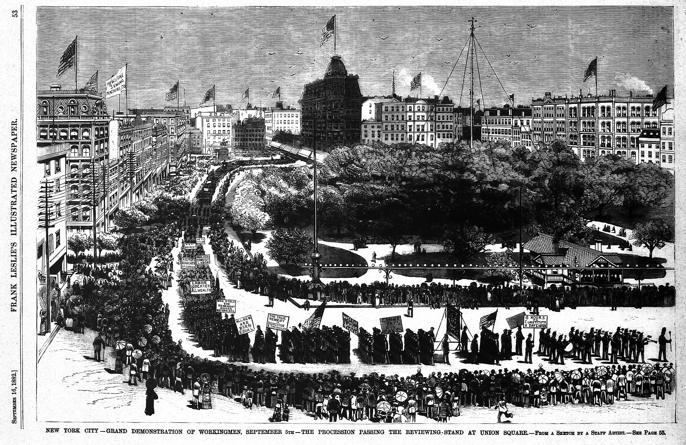

LABOR DAY
This article is about the U.S. holiday. For the similarly named holiday in other countries, see Labour Day.For other uses, see Labor Day (disambiguation).
Labor Day is a federal holiday in the United States celebrated on the first Monday in September to honor and recognize the American labor movement and the works and contributions of laborers to the development and achievements of the United States. It is the Monday of the long weekend known as Labor Day Weekend.Beginning in the late 19th century, as the trade union and labor movements grew, trade unionists proposed that a day be set aside to celebrate labor. "Labor Day" was promoted by the Central Labor Union and the Knights of Labor, which organized the first parade in New York City. In 1887, Oregon was the first state of the United States to make it an official public holiday. By the time it became an official federal holiday in 1894, thirty states in the United States officially celebrated Labor Day.[4]
Canada's Labour Day is also celebrated on the first Monday of September. More than 80 countries celebrate International Workers' Day on May 1 – the ancient European holiday of May Day. (May Day was chosen by the Second Internationale of socialist and communist parties to commemorate the Haymarket affair, which occurred in Chicago on May 4, 1886.[5][6])

More Information about Labor Day.
Beginning in the late 19th century, as the trade union and labor movements grew, different groups of trade unionists chose a variety of days on which to celebrate labor. In the United States, a September holiday called Labor Day was first proposed in the early 1880s. Alternate stories of the event's origination exist.[citation needed]
According to one early history of Labor Day, the event originated in connection with a General Assembly of the Knights of Labor convened in New York City in September 1882.[7] In connection with this clandestine Knights assembly, a public parade of various labor organizations was held on September 5 under the auspices of the Central Labor Union (CLU) of New York.[7] Secretary of the CLU Matthew Maguire is credited for first proposing that a national Labor Day holiday subsequently be held on the first Monday of each September in the aftermath of this successful public demonstration.[8]
P. J. McGuire, Vice President of the American Federation of Labor, is frequently credited as the father of Labor Day in the United States. An alternative thesis maintains that the idea of Labor Day was the brainchild of Peter J. McGuire, a vice president of the American Federation of Labor, who put forward the initial proposal in the spring of 1882.[4] According to McGuire, on May 8, 1882, he made a proposition to the fledgling Central Labor Union in New York City that a day be set aside for a "general holiday for the laboring classes".[9] According to McGuire he further recommended that the event should begin with a street parade as a public demonstration of organized labor's solidarity and strength, with the march followed by a picnic, to which participating local unions could sell tickets as a fundraiser.[9] According to McGuire he suggested the first Monday in September as an ideal date for such a public celebration, owing to optimum weather and the date's place on the calendar, sitting midway between the Fourth of July and Thanksgiving public holidays.[9]
Labor Day picnics and other public gatherings frequently featured speeches by prominent labor leaders.[citation needed]
In 1909, the American Federation of Labor convention designated the Sunday preceding Labor Day as "Labor Sunday", to be dedicated to the spiritual and educational aspects of the labor movement.[8] This secondary date failed to gain significant traction in popular culture.
In 1887, Oregon became the first state of the United States to make Labor Day an official public holiday. By the time it became an official federal holiday in 1894, thirty U.S. states officially celebrated Labor Day.[4] The federal law, however, only made it a holiday for federal workers. As late as the 1930s, unions were encouraging workers to strike to make sure they got the day off.[10] All U.S. states, the District of Columbia, and the United States territories have subsequently made Labor Day a statutory holiday.